Meet Our Team
TJ Techstravaganza Team for 2027
Supreetha Chennuru
Co-President
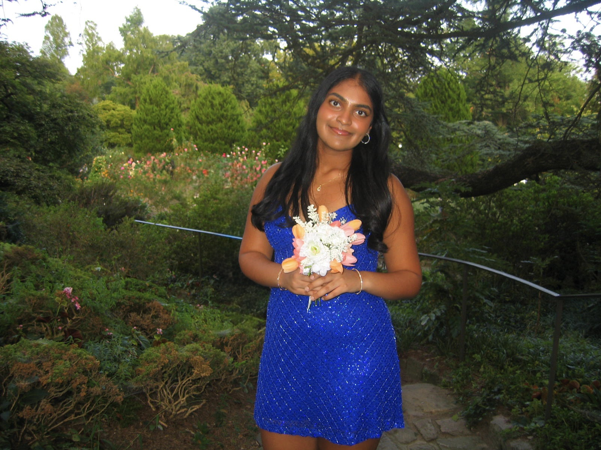
Supreetha is a senior and is very excited for her third year
on the Techstrav team! In her free time, she loves listening
to music, playing tennis, and traveling!
Hot Take: Pickleball is just tennis for people too lazy to run.
Favorite Candy: Reese's Peanut Butter Cups
Favorite Movie: Big Hero 6
Favorite Food: Rice
Hyorin Choi
Co-President
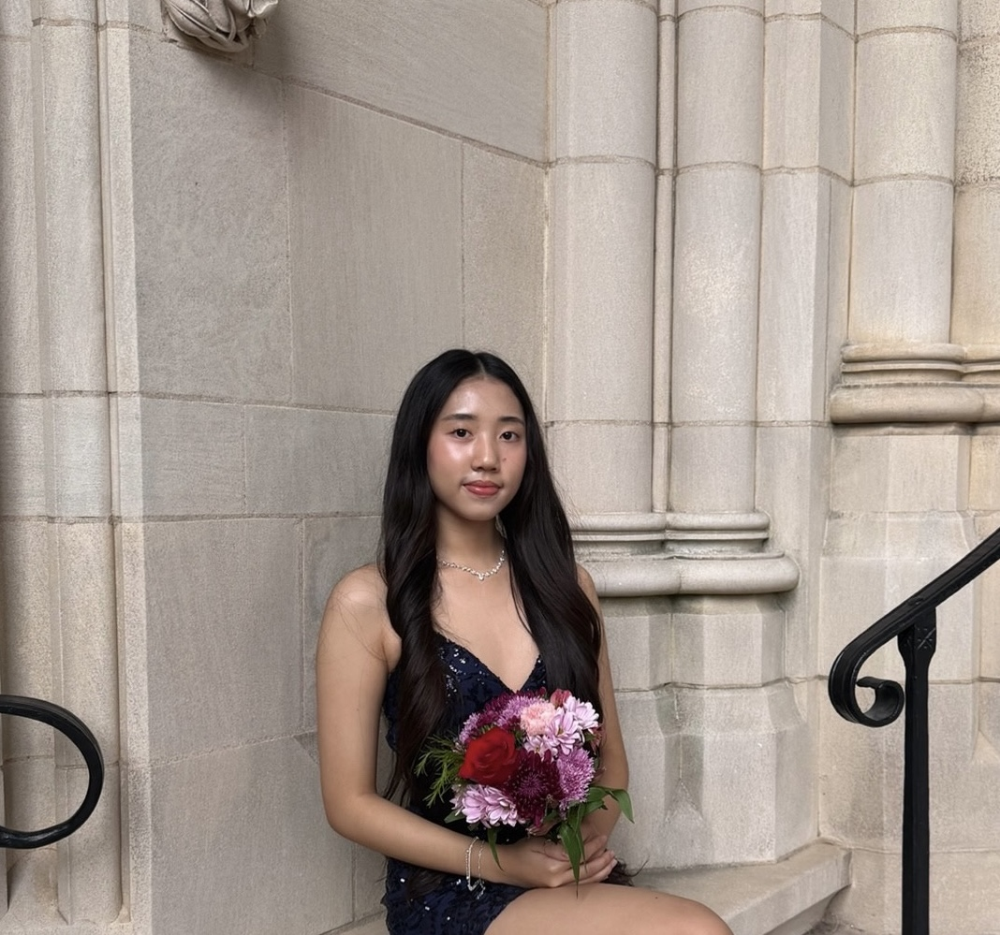
Hyorin is a senior and has been involved in TWIST and Techstrav
since her freshman year! During her free time, she loves to spend
time with her dog, listen to music, and watch K-dramas.
Hot Take: Cereals are better soggy
Favorite Candy: Trolli Gummy Worms
Favorite Movie: Se7en
Favorite Food: Buldak Ramen
Naaisha Mahajan
Finance Team Lead
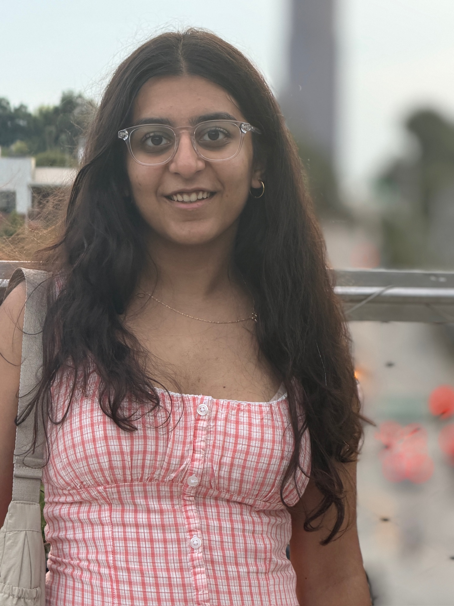
Naaisha is a senior and this is her third year being on
Techstrav! She loves to read, listen to music, and try new foods.
Hot Take: Mac and Cheese isn't good
Favorite Candy: Strawberry Twizzlers
Favorite Movie: 10 Things I Hate About You
Favorite Food: Wingstop Mango Habanero Boneless Wings
Yenna Kang
Sponsor/Exhibitors Team Lead
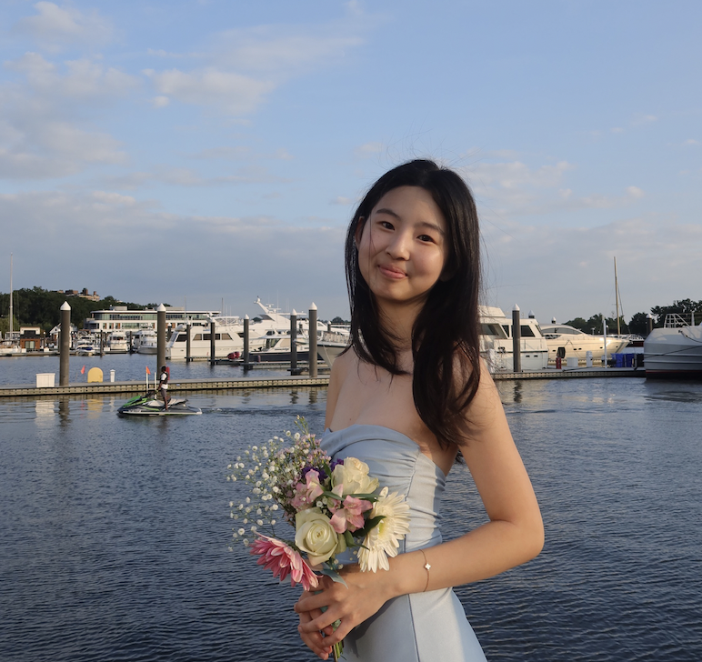
Yenna is a junior and has been a part of TWIST and Techstrav since
her freshman year. Outside of school, she loves going on walks,
trying new foods, playing the cello, and traveling.
Hot Take: Ketchup tastes bad
Favorite Candy: Sour Skittles
Favorite Movie: Avatar
Favorite Food: Mango Sticky Rice
Rayna Dennis
Title 1/Outreach Team Lead
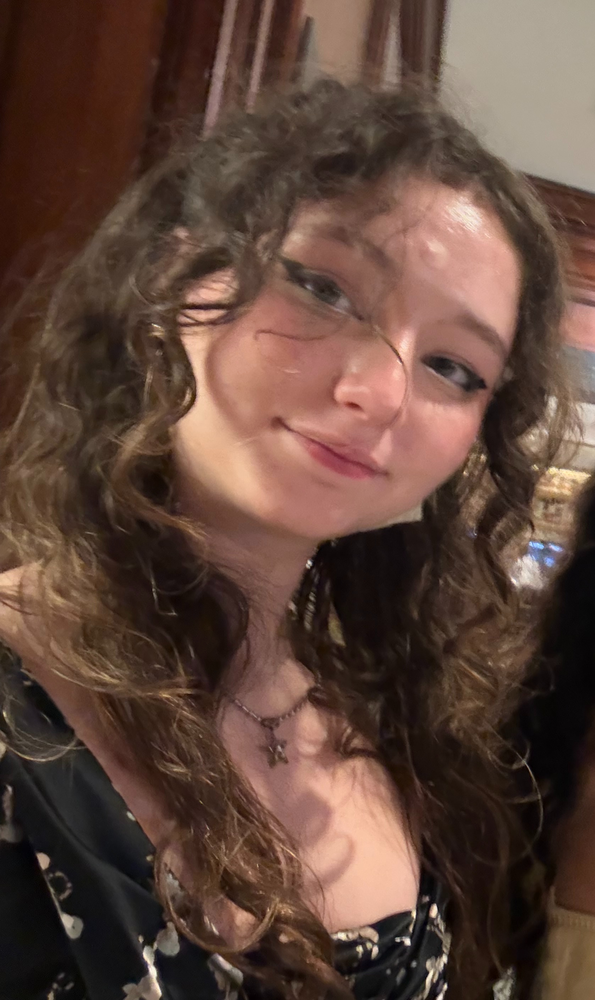
Rayna Dennis is a Junior excited for her third year on
the Techstravaganza team. In her free time, she loves singing,
performing theater, sewing, and hanging out with her cat Yuki!
Hot Take: Korra is a better Avatar than Aang
Favorite Candy: Kit-Kats
Favorite Movie: The Little Mermaid
Favorite Food: Egg Fried Rice
Grace Zhang
Techstravaganza Supervisor
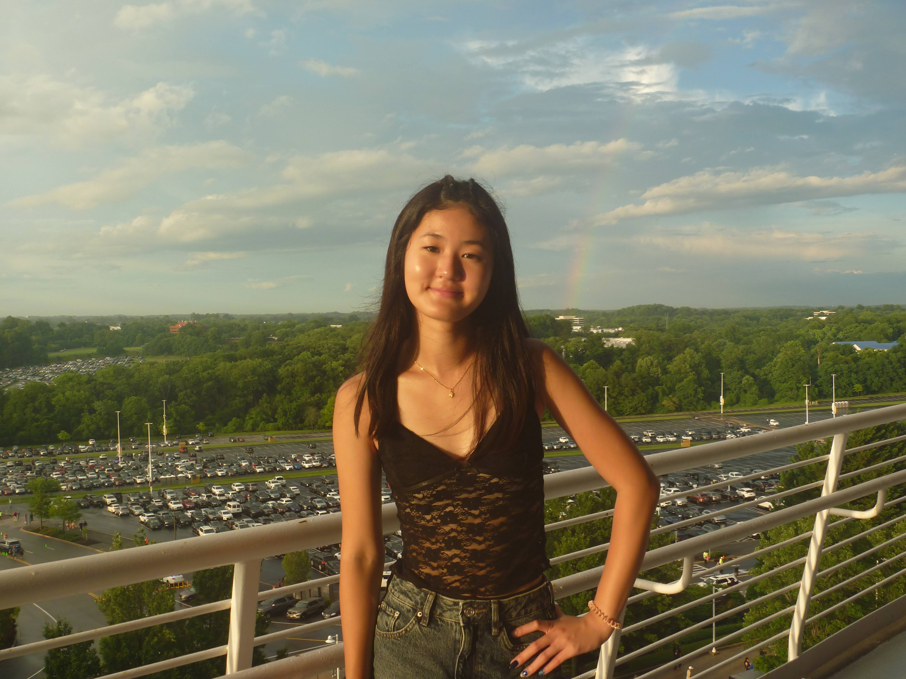
Grace is a junior and this is her second year on Techstrav!
In her free time, she loves listening to music, playing tennis,
running, and watching Grey's Anatomy.
Hot Take: Chick fil A is the best fast food
Favorite Candy: Twix
Favorite Movie: Top Gun Maverick
Favorite Food: Soup Dumplings
Chloe Kim
Techstravaganza Supervisor
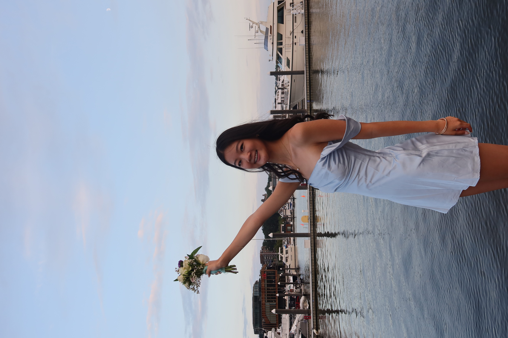
Chloe is a junior and has been a member of TWIST since
freshman year. She loves watching shows/movies in her free time.
Hot Take: Cold showers are superior to hot showers
Favorite Candy: Peelerz
Favorite Movie: Interstellar
Favorite Food: Sushi
Anushka Deodhar
Techstravaganza Supervisor
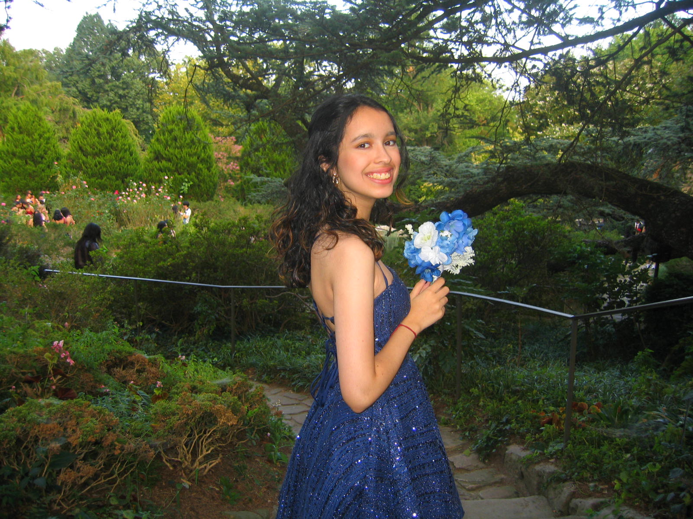
Anushka is a senior and is super excited to be a part of the
Techstravaganza team this year! In her free time, she enjoys
painting, traveling, and binge watching Bridgerton.
Hot Take: Hot drinks are never good
Favorite Candy: Reese’s or Crunch bars
Favorite Movie: A Simple Favor
Favorite Food: Sushi
Summer Bitar
Techstravaganza Supervisor
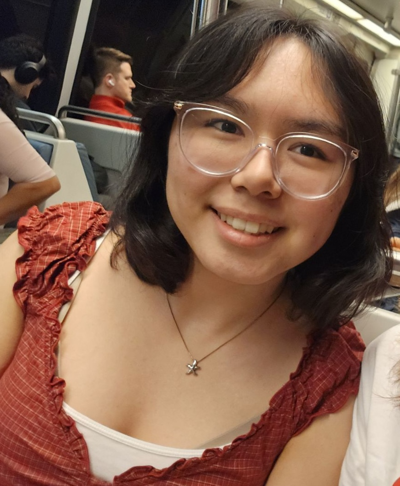
Summer is a Senior and has been involved in TWIST and Techstrav
since her sophomore year! Outside of school, she loves reading,
watching foreign films, listening to music, and trying all kinds
of different foods.
Hot Take: Asparagus is really bad
Favorite Candy: Kit Kats
Favorite Movie: Whiplash
Favorite Food: Poke bowl
Dia Ramesh
Techstravaganza Supervisor
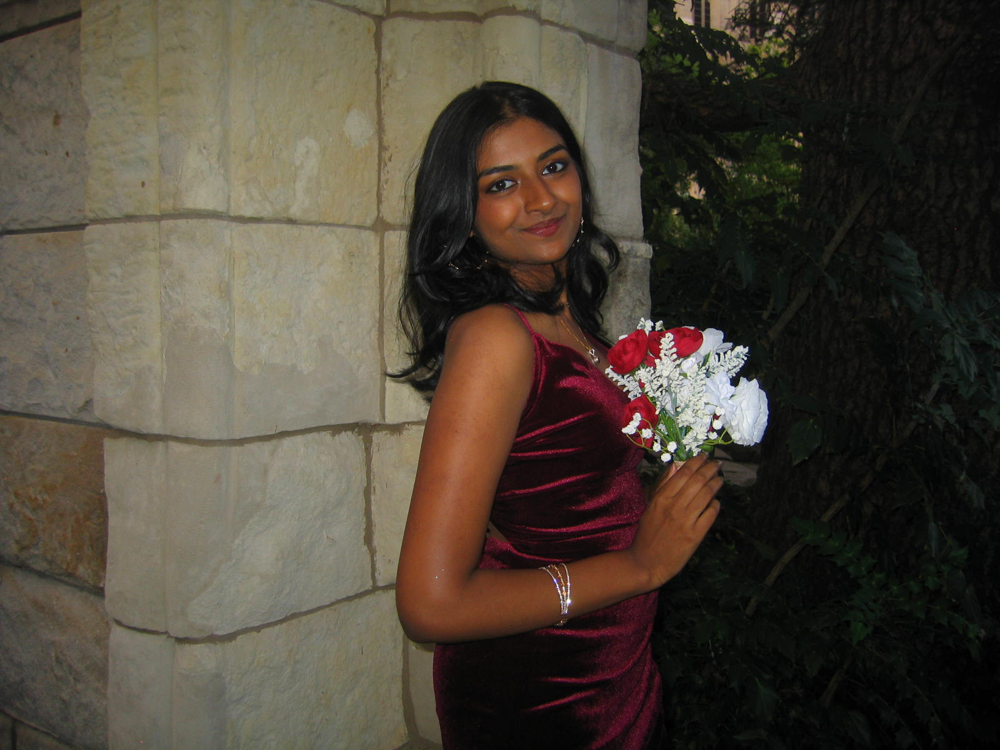
Dia is a senior and is excited to be a part
of the Techstrav team this year! She loves dancing,
painting, traveling, and spending time with friends.
Hot Take: Taco bell is overrated
Favorite Candy: Sour Patch watermelon
Favorite Movie: Tangled
Favorite Food: Drunken Noodles
Shritha Adapala
Techstravaganza Supervisor
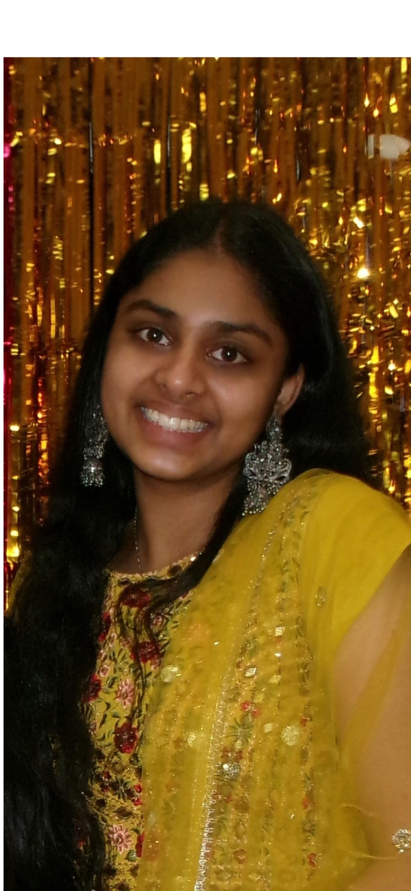
Shritha is a junior at TJ and is super excited to be a part of the Techstrav
team for the first time! During her free time, she loves playing tennis
and the violin, strumming her guitar, or watching movies.
Hot Take: Paper books are better than e-books
Favorite Candy: KitKats
Favorite Movie: La La Land
Favorite Food: Pasta
Aditi Alegonda
Techstravaganza Supervisor
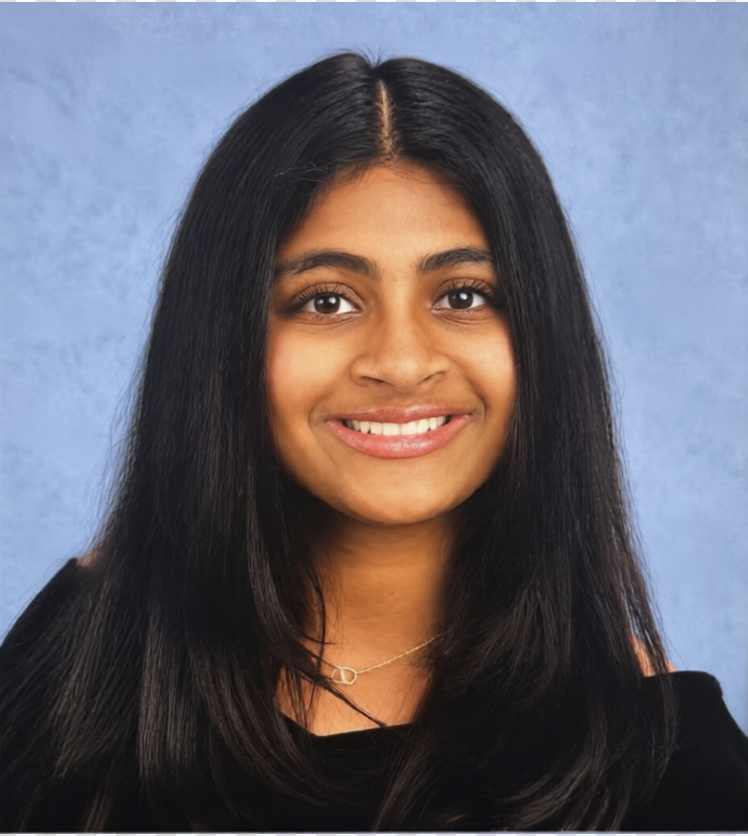
Aditi is a senior and has been a member of TWIST since her freshmen
year. In her free time, she loves watching new shows, hanging with
friends, and being with her dog. She's very excited for the
upcoming year!
Hot Take: Cereal goes with warm milk
Favorite Candy: M&Ms
Favorite Movie: The Princess Diaries
Favorite Food: Sushi
Lily Lu
Techstravaganza Supervisor
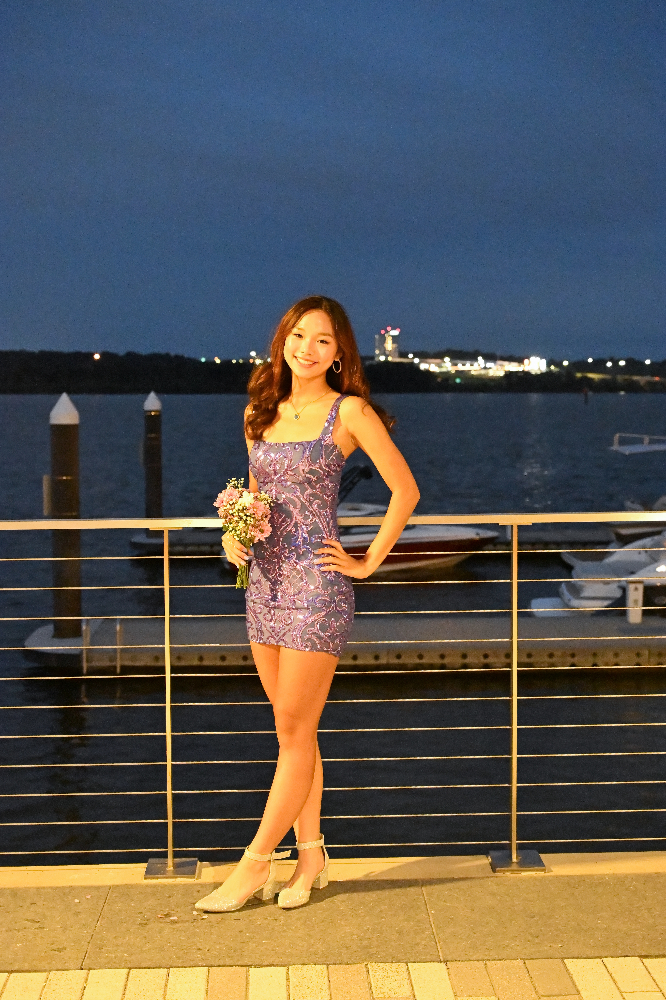
Lily Lu is a sophomore who is super excited for another year
organizing Techstrav! She loves playing soccer, pipe cleaner
flowers, and her dog Tofu!
Hot Take: Eggs are disgusting
Favorite Candy: Peelable gummies
Favorite Movie: Me Before You
Favorite Food: Sushi
Caroline Sackett
Techstravaganza Supervisor
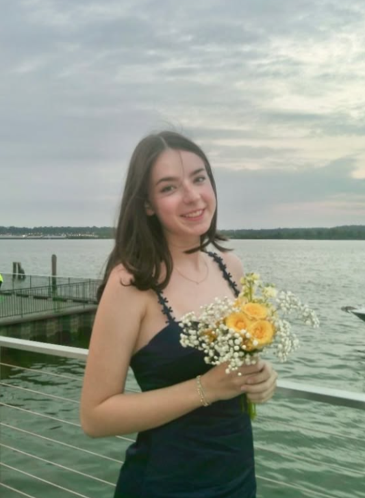
Caroline is a sophomore and very excited to help out with
Techstrav this year! In her free time, she loves playing
lacrosse, reading, and spending time with her friends.
Hot Take: Coffee doesn't actually taste good
Favorite Candy: M&Ms
Favorite Movie: 10 Things I Hate About You
Favorite Food: Pancakes
Asha Idiculla
Techstravaganza Supervisor
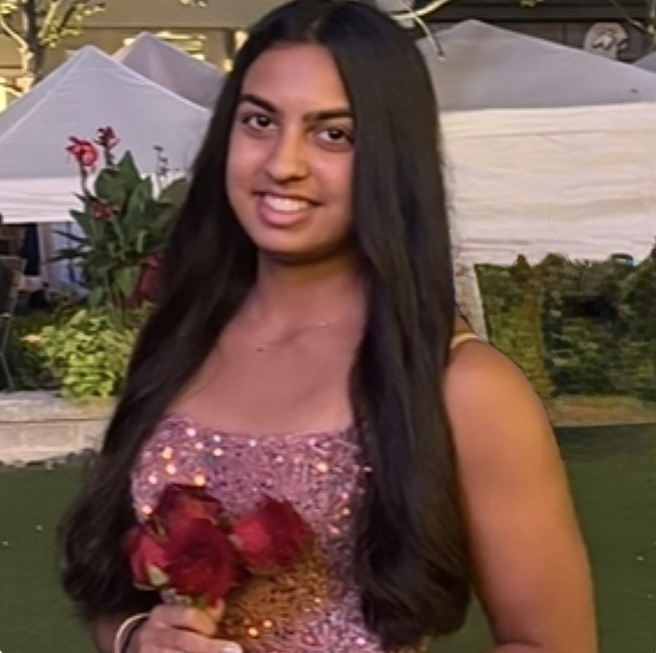
Asha is a junior at TJHSST and is excited to join Techstrav for the
second time! In her free time she likes listening to music, playing
volleyball, and spending time with friends.
Hot Take: "Discipline in sports, school, and faith isn't
a burden - it is a lifestyle for happiness and growth."
Favorite Candy: Nerd Clusters
Favorite Movie: Spider Man: Brand New Day
Favorite Food: Fish tacos
Anna Ching
Techstravaganza Supervisor
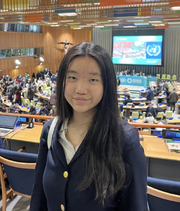
Anna is a junior, and she is excited to be on the Techstrav
team this year! In her free time, she enjoys working on
community/service initiatives, reading, listening to music,
and spending time with friends and family.
Hot Take: Side quests are better than the main quest.
Favorite Candy: Twix
Favorite Movie: Wonder
Favorite Food: Sushi
Hanna Lei Daoang
Techstravaganza Supervisor
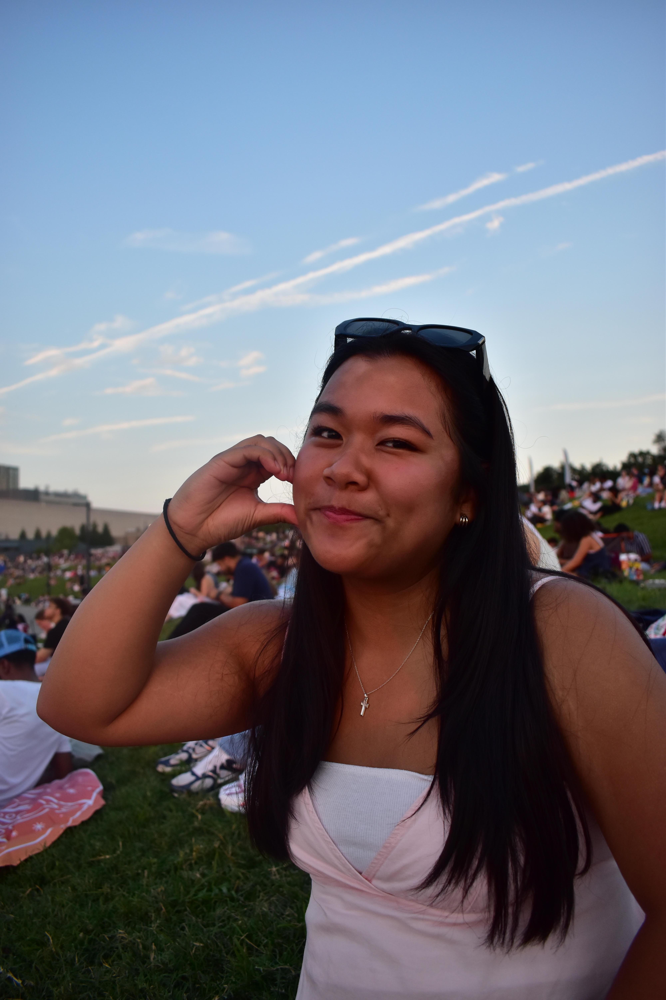
Hanna Lei is a senior and is very excited for her first year
on the Techstrav team! In her free time, she loves baking,
watching movies, and trying new foods!
Hot Take: Listening to music is overrated
Favorite Candy: Peach rings
Favorite Movie: 10 Things I Hate About You
Favorite Food: Pepperoni pizza with Dave's Hot Honey
Naveli Jain
Techstravaganza Supervisor
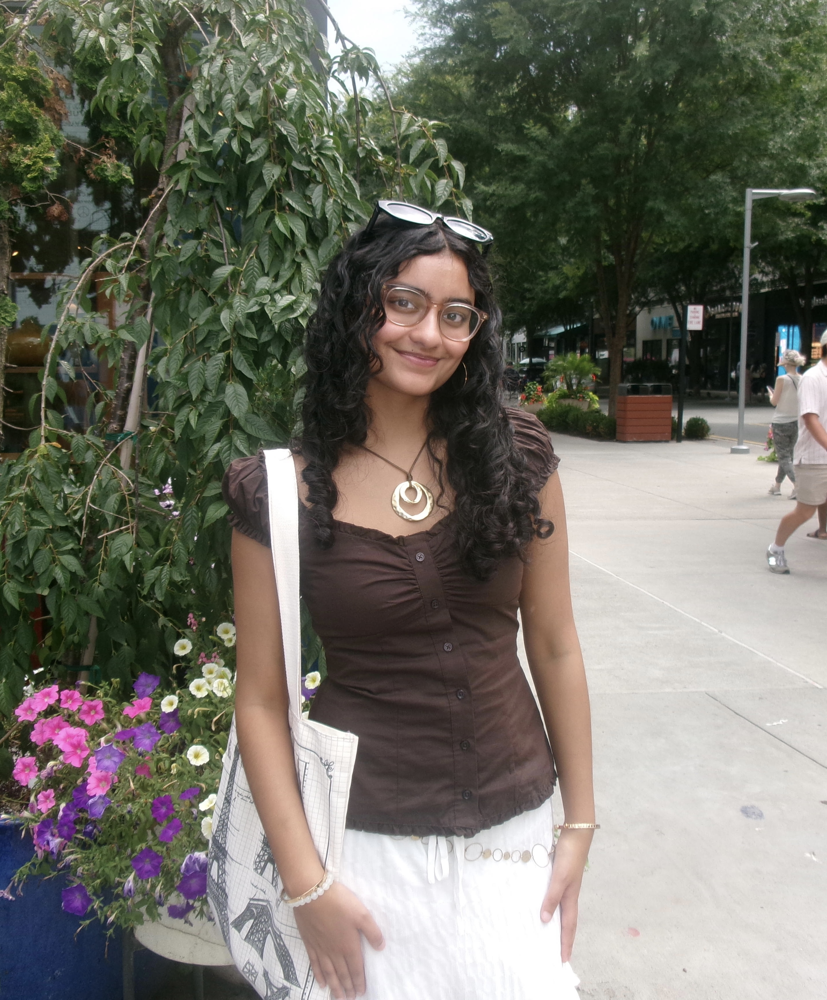
Naveli is a sophomore at TJ and is looking forward to her
second year on Techstrav! She enjoys reading new books,
photography, baking cakes, and traveling in her free time.
Hot Take: Hot Cocoa is an all-year drink
Favorite Candy: Watermelon Sour Patch Kids
Favorite Movie: Project Hail Mary
Favorite Food: Mac and Cheese
Emma Zhang
Techstravaganza Supervisor
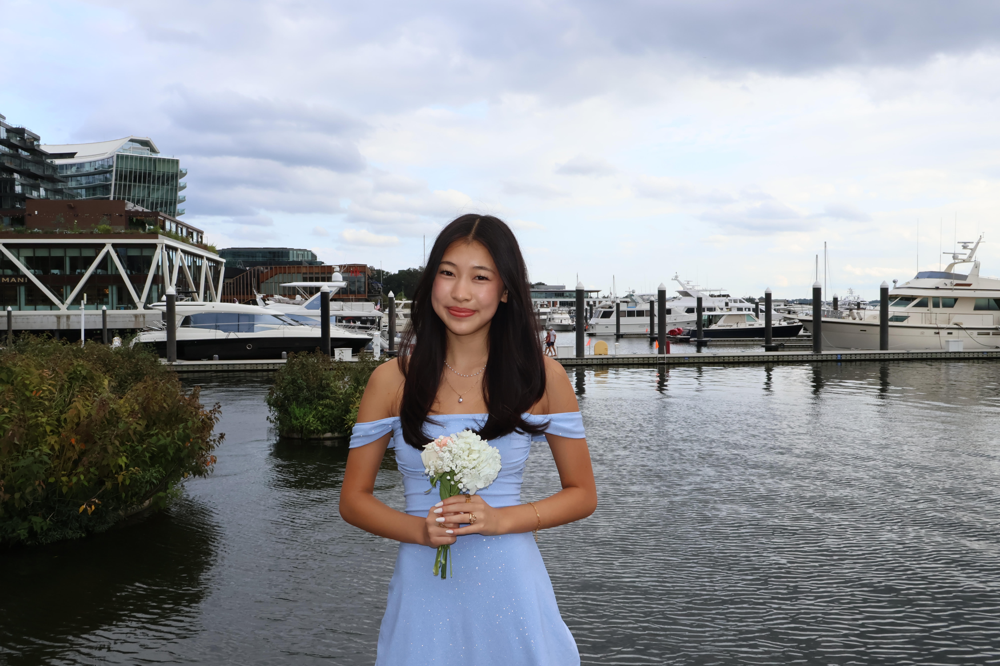
Emma is a junior and is excited for her second year on the
Techstrav Team! In her free time, she likes to spend time with
friends and family.
Hot Take: Pineapples belong on pizza.
Favorite Candy: Sour Patch
Favorite Movie: How to lose a guy in 10 days
Favorite Food: KBBQ
Mia Teresinski
Techstravaganza Supervisor
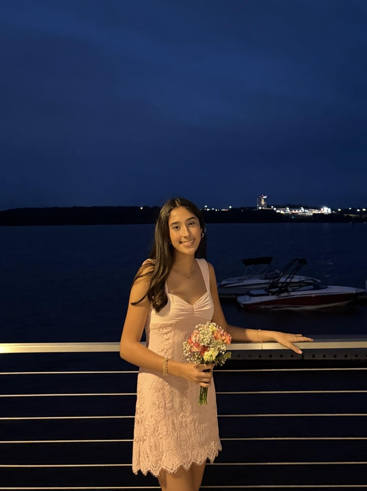
Mia is a sophomore and is excited to join Techstrav for the first time
this year! In her free time she likes listening to music, playing lacrosse,
and spending time with friends.
Hot Take: Pizza is overhyped
Favorite Candy: Bubs
Favorite Movie: 10 Things I Hate About You
Favorite Food: Pasta
Zoe Ta
Techstravaganza Supervisor
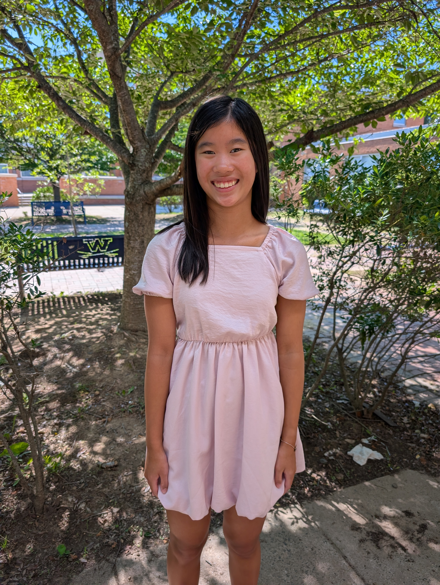
Zoe is a freshman, and she is very excited for her first year
on the Techstrav team! Outside of school, she loves drawing,
swimming, and traveling with her family.
Hot Take: Skiing is better than snowboarding
Favorite Candy: Watermelon Sour Patch
Favorite Movie: Mission Impossible: Dead Reckoning
Favorite Food: Pasta